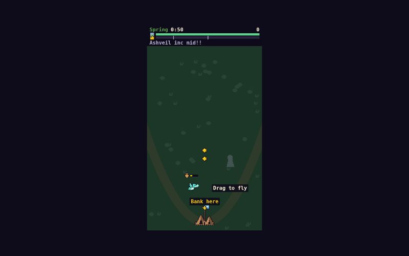

Inputs
- Concept
- an open-world fantasy MMO where you build a kingdom, trade with other players, raise dragons, and fight in seasonal guild wars
- Controls
- touch only, one thumb, phone held upright
- Ship score
- 90
Starred outputs
Deliver · gamedir
The finished game; open index.html
Deliver · reportmd
What was built, how the science was applied, scores per round, next steps
Wyrmhold: delivery report
Verdict: SHIP. Final score 90.0/100 (ship bar 90), no blockers, after 4 play-test rounds.
Concept and pitch
The concept was an open-world fantasy MMO where you build a kingdom, trade with other players, raise dragons and fight in seasonal guild wars. The scope was a 2–5 minute one-thumb arcade game, so the build keeps each noun as one mechanic you touch every few seconds and makes everything else art and copy.
Steer your growing dragon with one thumb: burn rival guild raiders, guide trade caravans home, and keep your castle standing through three seasons of guild war.
- Kingdom: one castle that grows itself from Camp to Keep, Fortress and Citadel as you bank gold.
- Trade: scripted caravans of "other players" (
Merchant_Lyra92,xX_SilkRoad_Xx) that you escort home for gold. - Dragons: one dragon that hatches from an egg and grows from Hatchling to Drake, Wyrm and Elder, with a new sprite and new handling at each tier.
- Guild wars: Spring, Summer and Winter each end in a War Horn siege by a named rival guild ([Ashveil], [Ironfang], [Frostmere]). The run ends on a 6-guild season leaderboard.
- MMO dressing: nameplates, a scrolling chat ticker and rival banners make it look like a live server, but it is entirely offline and single-player.
Style: 16-bit pixel art, top-down 3/4 view, vanilla Canvas 2D with no libraries.
How to play
- Touch to start. The egg hatches and you are flying in under a second.
- Drag anywhere to steer. The dragon moves by your finger's offset ×1.6, so your thumb never covers it. Lift your finger and it circles where it is.
- Fire is automatic. The dragon breathes at the nearest raider in range twice a second, and burned raiders drop coins.
- Fly over coins to pick them up. The sack above the dragon shows how much you carry. Fly over the castle to bank. Unbanked gold scores nothing, and banking a nearly full sack pays ×1.25 ("Full Hoard").
- Archers flash their bow before they shoot. A hit spills 30% of what you carry, and you have 4 s to grab it back.
- Escort caravans by staying inside their blue ring. They go 3× faster and pay gold when they reach the gate.
- At each tier-up, fly into one of two shields: Dragon (stronger breath) or Walls (an extra tower, more HP, faster reload).
- Win by keeping the castle standing through the Winter siege, which gives a ×1.5 score bonus. Lose if the castle falls. Touch Play again to restart instantly.
A full run lasts about 2:50. Your best score is saved locally.
How to host
game/ is a self-contained static folder: index.html at the root, relative paths only, no CDN and no build step.
- Local: open
game/index.htmldirectly (it works fromfile://), or runpython3 -m http.serverinsidegame/. - Web: copy the whole
game/folder to any static host (GitHub Pages, Netlify, S3, itch.io as an HTML game) and open itsindex.html. - Machine hook:
window.__game = { start(), state, score, perf }.start()skips the title.?seed=Nfixes the RNG.
Delivery check: I loaded the packaged copy once from file:// in headless Chrome (390×844, DPR 2, touch):
- title reached, and
start()→play - 5 s of play: fps 60, worstMs 16.8
- 0 console errors or warnings, 0 page errors, 0 failed requests
The science applied
The concept brief (brief.md) and the fun brief (fun-brief.md) disagreed in places. The GDD settled each disagreement in one table, and these are the main decisions and the principles behind them.
| GDD decision | Principle (source) | How it shows in the game |
|---|---|---|
| Drag is the only input. Collecting, banking, escorting and choosing all happen by flying over things | Intuitive controls predict enjoyment (β = .64), and they work through felt competence, which predicts replay (β = .41) (Ryan, Rigby & Przybylski 2006). One-thumb grip (Hoober) | Relative drag keeps the dragon visible above the thumb. Feedback fires on the frame of contact, well under the 100 ms direct-manipulation threshold (Nielsen/Miller) |
| Three seasons of 50/50/60 s, each ending in a siege, about 2:50 in total | Tension → release with a climax, and avoid runaway leaders (MDA). The fiero key (Lazzaro) | Each season has an open-play build-up, then the War Horn. Siege size scales with castle tier, so a strong economy draws a stronger rival. The winning runs were decided in the last seconds of Winter |
| Egg hatches on the first touch, then four visibly different dragon tiers | Naches and wonder (Lazzaro, Easy/People Fun). Chain schedule: the next goal is always in view (Hopson) | The Kingdom bar always shows the next tier tick, and an average run grows 2–3 times |
| Choices are spatial: escort vs. hunt, bank now vs. hold for Full Hoard, Dragon vs. Walls boon | Autonomy (β = .49 for enjoyment). One binary choice every 10–20 s, and at least two winning strategies (fun brief §3) | After round 4 tuning, both boon strategies win: always-Walls bots 2/2 in play-test and 7/12 in sims, always-Dragon bots 1/2 and 9/12 |
| Full Hoard ×1.25 and burn chains instead of a tap-timing window | Skill should pay more than luck (competence) | Greed and chains reward flying well. Chain pitch climbs one semitone per kill |
| A gem drops from 1 in 4–14 kills (mean 8) | Variable-ratio schedule (Hopson), scaled to a 3-minute run | Cyan sparkle and its own chime, so it is noticed before pickup |
| Anti-runaway: below 40% HP, caravans come sooner and pay more | MDA negative feedback that keeps the outcome open | Trailing players get help, so Winter stays in doubt |
| No tutorial screen. One skill atom at a time in the first 30 s, with labels of five words or fewer | Cook's skill atoms. Learn by doing | "Drag to fly" ghost thumb, then a coin line, "Bank here", one slow grunt, the first caravan, the first archer. 15 g was banked by 5 s in every play-test run |
| The game-over screen gives a one-line cause, a run-specific tip, the best score and a guild ladder. Restart is one touch | Players prefer failure they can blame on themselves, and "failure adds content" (Juul 2009) | "Grunts overran your Citadel" plus a tip. Restart takes 33–39 ms |
| Faked social layer: usernames, ticker, rival banners, leaderboard | Relatedness drives MMO play (Ryan et al., Study 4). Schadenfreude against named rivals (Lazzaro) | Nameplates, ticker and banners are on screen in normal play, and [Wyrmhold] is ranked against 5 seeded rivals |
| Juice budget: particles, 2–4 px shake on big events only, 60–80 ms hit-stop on tier-up and champion kill | Swink's game feel: put the sensitivity in the response when input bandwidth is low | Weighted flight with banking tilt, coin ease-out pulls, coin showers, and one SFX cue per event |
| All play-critical targets in the lower 60%, at least 48 px | Hoober's thumb reach. 48 dp touch-target convention | Boon shields are 72 px at y 470. The castle is at the bottom centre. The HUD at the top is read-only |
Play-test scores per round
Scores come from stages/playtest/rounds/1–3/scores.json and the final stages/playtest/outputs/scores.json. Each criterion is out of 10; the total is out of 100.
| Criterion | R1 | R2 | R3 | R4 (final) |
|---|---|---|---|---|
| Reads as concept | 8 | 9 | 9 | 9 |
| Core loop and flow | 8 | 8 | 8 | 8 |
| Game feel | 7 | 8 | 8 | 9 |
| Onboarding | 8 | 7 | 7 | 9 |
| Performance | 10 | 10 | 10 | 10 |
| Art readability | 7 | 7 | 7 | 8 |
| Audio feedback | 6 | 8 | 8 | 9 |
| Acceptance checklist | 8 | 9 | 9 | 10 |
| Total | 77.5 | 82.5 | 82.5 | 90.0 |
| Verdict | iterate | iterate | iterate | ship |
Round 1 (77.5):
- SFX pitch climbs were broken: the game passed rate ratios where sfx.js expects semitones.
- The fire breath didn't read in still frames.
- Winter looked like night, not snow.
- The Spring siege was too harsh.
Round 2 (82.5): polish fixed all of round 1's issues. New issues:
- Caravan nameplates and the moved "Drag to fly" pill covered the dragon.
- The Walls boon was a trap: always-Walls bots lost every run.
- Bank and chain floats piled up, and there was no siege ambience.
Round 3 (82.5): the polish session ended before writing anything, so the build was byte-identical to round 2 and the same notes were raised again.
Round 4 (90.0): every open note was closed and still held in wall-clock play.
- Plates draw under the dragon, and the pill is clear of the spawn point.
- Walls got +60 HP, a 1.0 s boon-tower reload and ×0.9 reload on all towers per boon.
- Floats collapse and chains read ×n.
- A siege ambience bed was added.
- Pause now actually silences audio.
The play-test ran 4 wall-clock runs with live touch: 3 wins at 2:50 (5783, 7158, 6461) and 1 loss early in Winter (3788). It saw 60 fps / 16.8 ms worst frame and 0 errors.
Final verdict
SHIP at 90.0/100 with no blockers. All 15 GDD acceptance items pass. The game reads as the concept at a glance, runs at a locked 60 fps, opens from file://, has two viable strategies, and restarts in a few dozen milliseconds.
What the next iteration should tackle
- Warn before the castle collapses. One loss went from 155 HP to rubble in about 4.5 s as grunts massed at the gate, and the only warning was the HP bar pulse below 30%. A cue when grunts mass at the gate would make that loss feel earned. Options: a gate alarm, a red vignette that scales with the number of attackers, or a ticker line such as "Frostmere at the gate!". Core-loop score: 8.
- Ease arrow pressure. Walls-strategy runs took 37–42 arrow hits and spilled 263–428 g. Try a longer archer cooldown in Summer and Winter, or cap how many archers can be drawing at once.
- Match the loss tip to the loss cause. The tip rule picks the first match, so it can give advice unrelated to what actually ended the run.
- Fix the edge-on coin spin frames. They read as thin yellow bars when dozens are on screen. This is in the art asset and has been unchanged since round 1. Art-readability score: 8.
- Housekeeping: the round 4 polish changelog still contains a literal
WALL_CLOCK_PLACEHOLDERline in its verification list. It doesn't affect the game. - Beyond polish, ways to grow scope:
- a sound toggle on the title (cut in tech)
- a fourth season or endless mode for players who already win
- a daily seed with a shared ladder, which would make the faked social layer real
Package contents
game/: the shipped build, identical tostages/polish/outputs/game/.screenshots/: the final round 4 play-test captures: title, hatch, play at 5–165 s, game-over cards and restart.report.md: this file.
Play link · playmd
One click to play: a link to the delivered game served by modpipes, with the pitch, controls, and final score
Play Wyrmhold Steer your growing dragon with one thumb: burn rival guild raiders, guide trade caravans home, and keep your castle standing through three seasons of guild war. Controls: drag anywhere with one thumb to steer; the dragon breathes automatically, and you fly over coins and the castle to collect and bank gold. Final play-test score: 90.0/100 (ship).
Questions and answers
No stage asked the user a question.
Other outputs
- Design brief · brief.md 7.3KB
- Fun and engagement science · fun-brief.md 16KB
- Performance science · perf-brief.md 14KB
- Art and audio science · art-brief.md 18KB
- Game design document · gdd.md 26KB
- Tech plan · tech-plan.md 33KB
- Art direction · art-direction.md 28KB
- Art direction · asset-plan.json 12KB
- Assets · assets.dir 4.1KB
- Game code · game.dir 4.1KB
- Integrate · game.dir 4.1KB
- Integrate · screenshots.dir 4.1KB
- Integrate · smoke.md 5.7KB
- Polish · game.dir 4.1KB
- Polish · changelog.md 12KB
- Play-test critic · scores.json 4.3KB
- Play-test critic · notes.md 2.6KB
- Play-test critic · verdict.md 800B
- Play-test critic · screenshots.dir 4.1KB
- Deliver · screenshots.dir 4.1KB
| Stage | Group | Status | Model | Duration | Tokens |
|---|---|---|---|---|---|
| Design brief | understand | done | opus | 1 min 02 s | 95K |
| Fun and engagement science | understand | done | opus | 2 min 32 s | 561K |
| Performance science | understand | done | opus | 4 min 25 s | 419K |
| Art and audio science | understand | done | opus | 3 min 56 s | 367K |
| Game design document | design | done | opus | 3 min 26 s | 242K |
| Tech plan | plan | done | opus | 4 min 18 s | 365K |
| Art direction | plan | done | opus | 5 min 02 s | 578K |
| Assets | build | done | opus | 7 min 00 s | 1.8M |
| Game code | build | done | opus | 21 min 47 s | 6.6M |
| Integrate | integrate | done | opus | 3 min 28 s | 733K |
| Polish | polish | done | opus | 3 min 39 s | 20.6M |
| Play-test critic | judge | done | opus | 13 min 40 s | 8.7M |
| Deliver | deliver | done | opus | 1 min 38 s | 647K |
| Play link | play | done | haiku | 29 s | 267K |